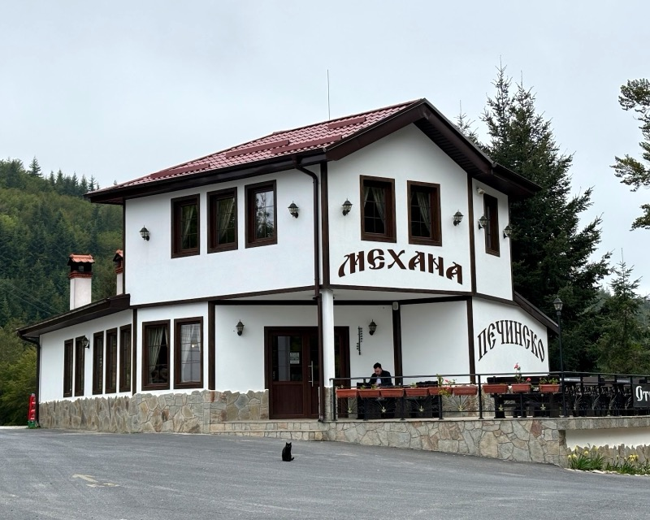
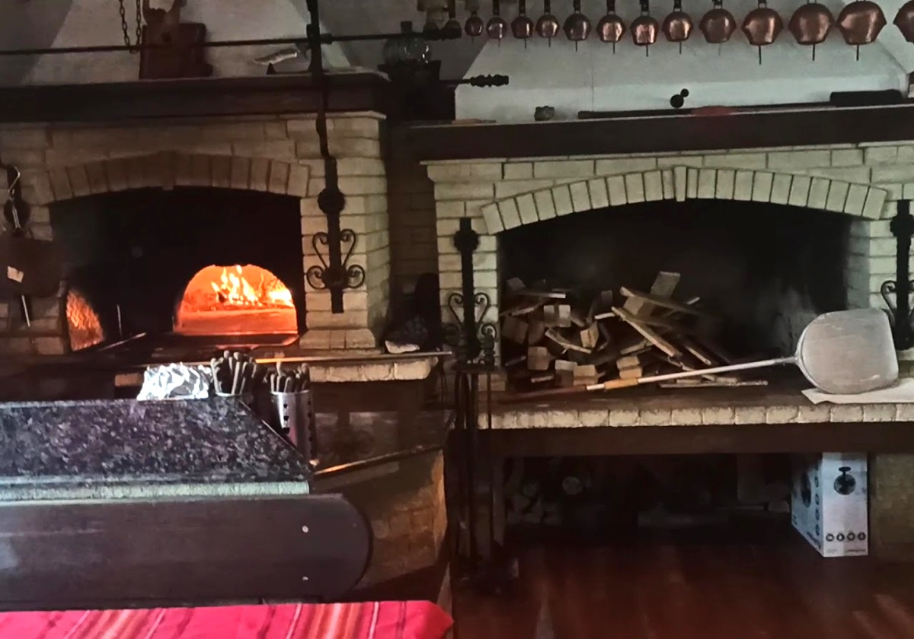

Проход Печинско · 1060 м · между Мадан и Златоград
Жива жар, топъл хляб, родопска трапеза
Българска кухня, топъл хляб, ястия на жар и планинска гледка — място, на което пътят за малко остава зад гърба ви.

- седловина на 1060 м
- на път III-867 Мадан – Златоград
- проходът е отворен целогодишно
От кухнята на Печинско
Ястията, заради които се връщат
Ястия за споделяне, топъл хляб и познати родопски вкусове — приготвени за бавен обяд, спокойна вечеря и добра компания.
Чеверме и скара
Когато огънят е част от рецептата
Чевермето не бърза. Върти се бавно на жив огън, докато месото стане крехко, а ароматът събере всички около трапезата. Скарата работи по същия начин — на жар от дърва, без компромиси.
Необходима е предварителна заявка: за цяло агнешко чеверме се обадете поне ден по-рано. Уточняваме деня, часа и колко голяма е трапезата.

За механата
Тук пътят спира за малко
На Проход Печинско, между Мадан и Златоград, механата посреща гости с планинска гледка, българска кухня и спокойствието на Родопите.
Място за обяд по пътя, вечеря с приятели или дълга трапеза със семейството. През лятото — на терасата с гледка към ридовете; през зимата — вътре, близо до огъня.
Пътят през прохода свързва долините на Арда и Върбица и е отворен през цялата година. Много гости ни откриват на път за Златоград и границата с Гърция — и после се връщат нарочно.
- КъдеПроход Печинско, път III-867
- МеждуМадан и Златоград, област Смолян
- Кухнябългарска и родопска
- Услугина място · за вкъщи · доставка
- Добре е да знаететераса с гледка · за деца · плащане в брой
Атмосферата
Механата, гледката, огънят
Няколко кадъра от прохода — сградата, трапезата и това, което излиза от кухнята.
Думи на гости
Какво разказват след трапезата
Откъси от публични отзиви в Google, съкратени. Преди публикуване е нужно одобрение от механата.
Как да ни намерите
На Проход Печинско
Механата е на самата седловина на прохода, на път III-867 между Мадан и Златоград.
- От Мадан: следвайте пътя към Златоград; механата е на най-високата точка на прохода.
- От Златоград: поемете по път III-867 към Мадан; ще видите механата на седловината.
- На път за Гърция: проходът е естествена спирка по пътя към Златоград и граничния пункт.

Картата се зарежда от Google Maps след натискане на бутона.
Резервации
Резервирайте маса
Най-бързо става по телефона. Може и да оставите заявка с формата — ще ви позвъним, за да я потвърдим.
Обадете ни се
За резервации за същия ден и за заявки за чеверме телефонът е най-сигурен.
089 369 8008